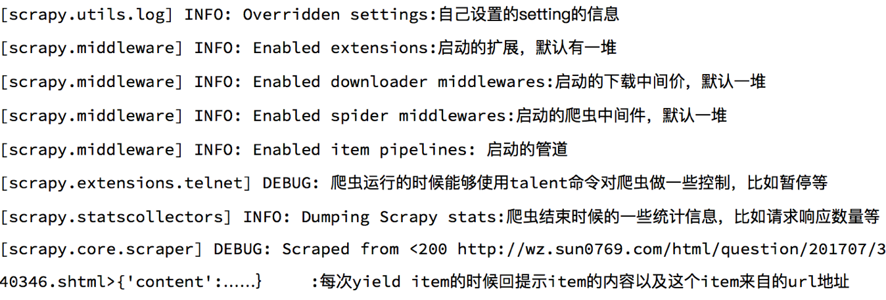

scrapy的深入使用
学习目标：
- 了解 scrapy debug信息
- 了解 scrapy shell的使用
- 掌握 scrapy的settings.py设置
- 掌握 scrapy管道(pipelines.py)的使用
1 了解scrapy的debug信息

2 了解scrapyShell
scrapy shell是scrapy提供的一个终端工具，能够通过它查看scrapy中对象的属性和方法，以及测试xpath
使用方法：
scrapy shell http://www.itcast.cn/channel/teacher.shtml
在终端输入上述命令后，能够进入python的交互式终端，此时可以使用：
- response.xpath()：直接测试xpath规则是否正确
- response.url：当前响应的url地址
- response.request.url：当前响应对应的请求的url地址
- response.headers：响应头
- response.body：响应体，也就是html代码，默认是byte类型
- response.requests.headers：当前响应的请求头
3 settings.py中的设置信息
3.1 为什么项目中需要配置文件
在配置文件中存放一些公共变量，在后续的项目中方便修改，如：本地测试数据库和部署服务器的数据库不一致
3.2 配置文件中的变量使用方法
- 变量名一般全部大写
- 导入即可使用
3.3 settings.py中的重点字段和含义
- USER_AGENT 设置ua
- ROBOTSTXT_OBEY 是否遵守robots协议，默认是遵守
- CONCURRENT_REQUESTS 设置并发请求的数量，默认是16个
- DOWNLOAD_DELAY 下载延迟，默认无延迟
- COOKIES_ENABLED 是否开启cookie，即每次请求带上前一次的cookie，默认是开启的
- DEFAULT_REQUEST_HEADERS 设置默认请求头，这里加入了USER_AGENT将不起作用
- SPIDER_MIDDLEWARES 爬虫中间件，设置过程和管道相同
- DOWNLOADER_MIDDLEWARES 下载中间件
- LOG_LEVEL 控制终端输出信息的log级别，终端默认显示的是debug级别的log信息
- LOG_LEVEL = "WARNING"
- LOG_FILE 设置log日志文件的保存路径，如果设置该参数，终端将不再显示信息
- LOG_FILE = "./test.log"
- 其他设置参考：https://www.jianshu.com/p/df9c0d1e9087
4 pipeline管道的深入使用
继续完善itcast爬虫
之前我们在scrapy入门使用一节中学习了管道的基本使用，接下来我们深入的学习scrapy管道的使用
4.1 pipeline中常用的方法：
- process_item(self,item,spider):实现对item数据的处理
- open_spider(self, spider): 在爬虫开启的时候仅执行一次
- close_spider(self, spider): 在爬虫关闭的时候仅执行一次
4.2 管道文件的修改
在pipelines.py代码中完善
import json
from pymongo import MongoClient
class ItcastFilePipeline(object):
def open_spider(self, spider): # 在爬虫开启的时候仅执行一次
if spider.name == 'itcast':
self.f = open('json.txt', 'a', encoding='utf-8')
def close_spider(self, spider): # 在爬虫关闭的时候仅执行一次
if spider.name == 'itcast':
self.f.close()
def process_item(self, item, spider):
if spider.name == 'itcast':
self.f.write(json.dumps(dict(item), ensure_ascii=False, indent=2) + ',\n')
return item # 不return的情况下，另一个权重较低的pipeline将不会获得item
class ItcastMongoPipeline(object):
def open_spider(self, spider): # 在爬虫开启的时候仅执行一次
if spider.name == 'itcast':
con = MongoClient(host='127.0.0.1', port=27017) # 实例化mongoclient
self.collection = con.itcast.teachers # 创建数据库名为itcast,集合名为teachers的集合操作对象
def process_item(self, item, spider):
if spider.name == 'itcast':
self.collection.insert(dict(item)) # 此时item对象需要先转换为字典,再插入
# 不return的情况下，另一个权重较低的pipeline将不会获得item
return item
4.3 开启管道
在settings.py设置开启pipeline
......
ITEM_PIPELINES = {
'myspider.pipelines.ItcastFilePipeline': 400, # 400表示权重
'myspider.pipelines.ItcastMongoPipeline': 500,
}
......
别忘了开启mongodb数据库 sudo service mongodb start
并在mongodb数据库中查看 mongo
思考：pipeline在settings中能够开启多个，为什么需要开启多个？
- 不同的pipeline可以处理不同爬虫的数据，通过spider.name属性来区分
- 不同的pipeline能够对一个或多个爬虫进行不同的数据处理的操作，比如一个进行数据清洗，一个进行数据的保存
- 同一个管道类也可以处理不同爬虫的数据，通过spider.name属性来区分
4.4 pipeline使用注意点
- 使用之前需要在settings中开启
- pipeline在setting中键表示位置(即pipeline在项目中的位置可以自定义)，值表示距离引擎的远近，越近数据会越先经过：权重值小的优先执行
- 有多个pipeline的时候，process_item的方法必须return item,否则后一个pipeline取到的数据为None值
- pipeline中process_item的方法必须有，否则item没有办法接受和处理
- process_item方法接受item和spider，其中spider表示当前传递item过来的spider
- open_spider(spider) :能够在爬虫开启的时候执行一次
- close_spider(spider) :能够在爬虫关闭的时候执行一次
- 上述俩个方法经常用于爬虫和数据库的交互，在爬虫开启的时候建立和数据库的连接，在爬虫关闭的时候断开和数据库的连接
总结
- debug能够展示当前程序的运行状态
- scrapy shell能够实现xpath的测试和对象属性和方法的尝试
- scrapy的settings.py能够实现各种自定义的配置，比如下载延迟和请求头等
- 管道能够实现数据的清洗和保存，能够定义多个管道实现不同的功能，其中有个三个方法
- process_item(self,item,spider):实现对item数据的处理
- open_spider(self, spider): 在爬虫开启的时候仅执行一次
- close_spider(self, spider): 在爬虫关闭的时候仅执行一次